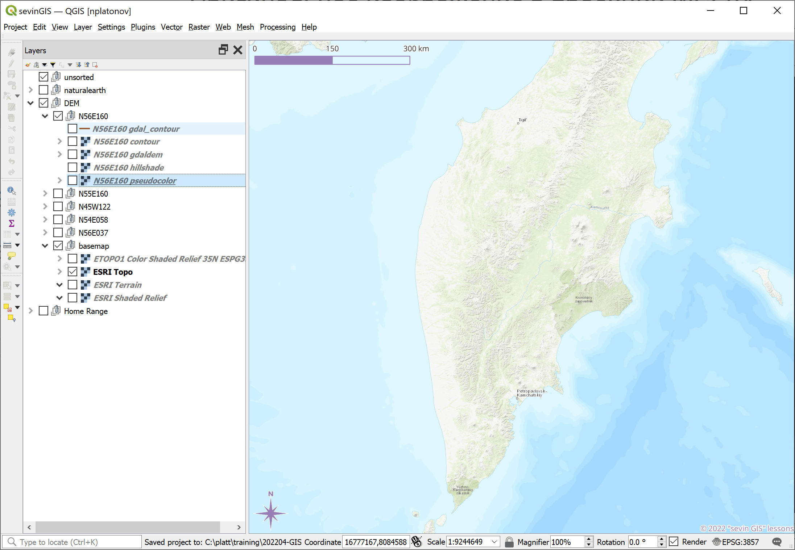
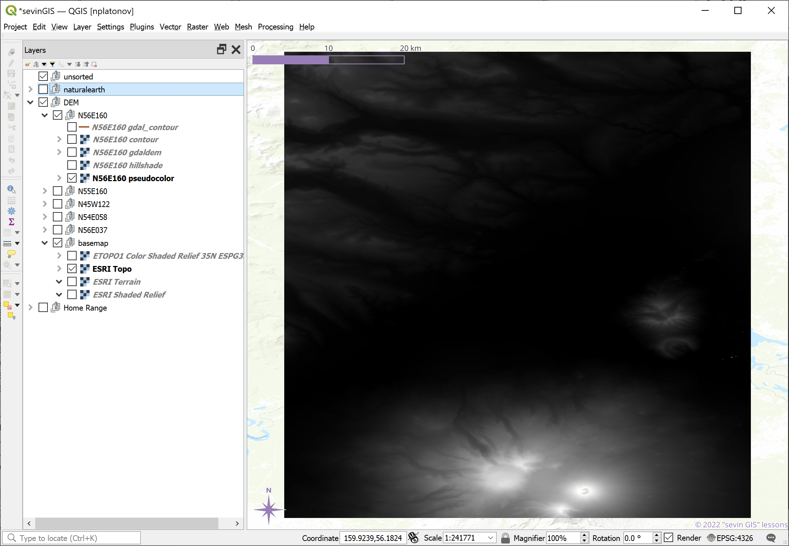
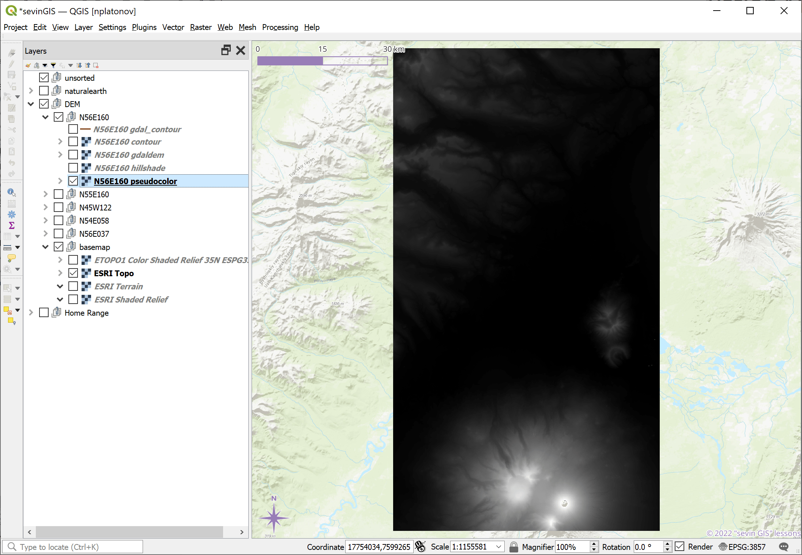
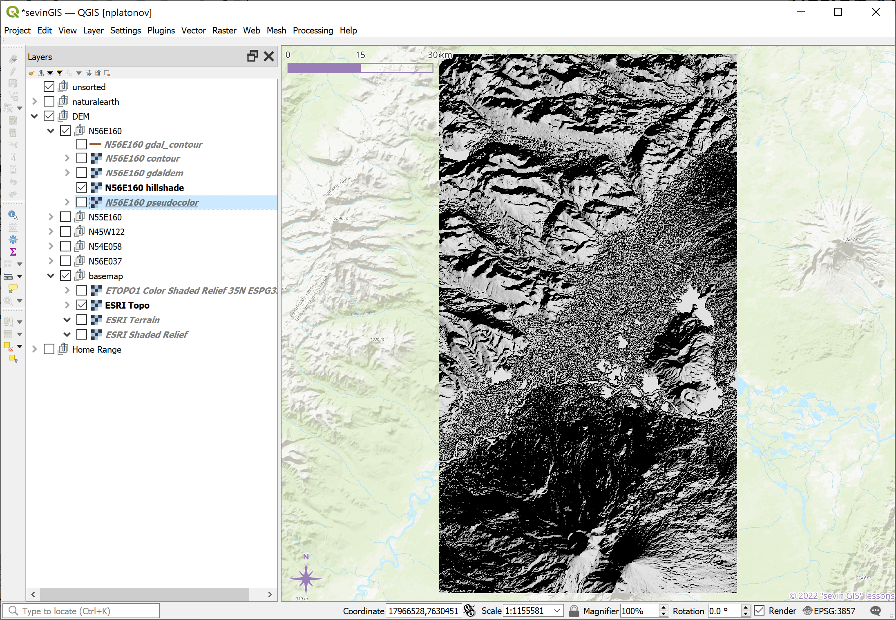
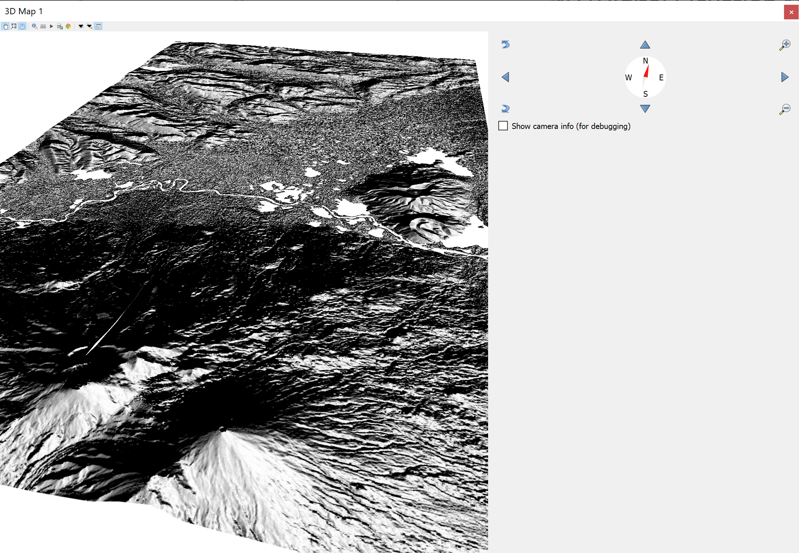
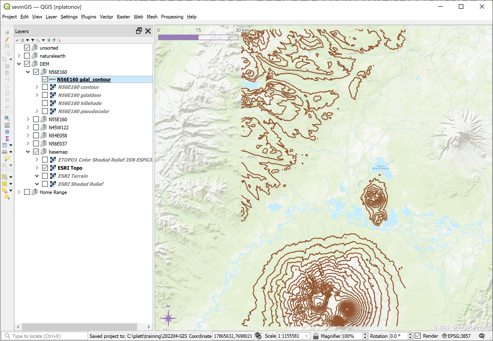
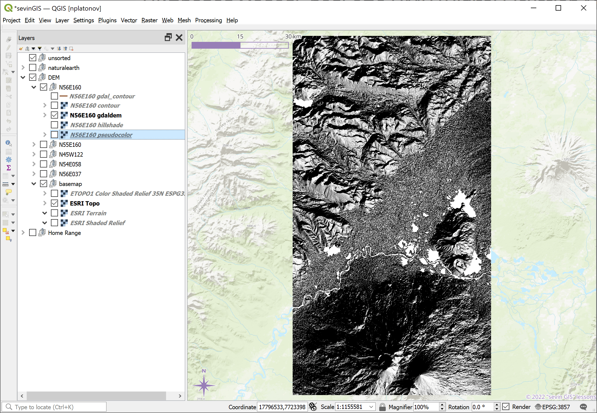

ЦМР
Цифровая модель рельефа ЦМР (Digital Elevation Model DEM)
QGIS визуализация
На примере вулканов Камчатского п-ова

Через свойства растра
Оригинальное изображение в проекции WGS84

Изображение в сферической проекции Меркатора

Настройка отображения теневой заливкой

Отображение теневой заливкой

3D отображение

Настройка контурного отображения

Контурное отображение

С помощью GDAL
Настройка GDAL модуля gdal_contour

Контур после GDAL модуля gdal_contour

Настройка GDAL модуля gdaldem

Растр после GDAL модуля gdaldem
